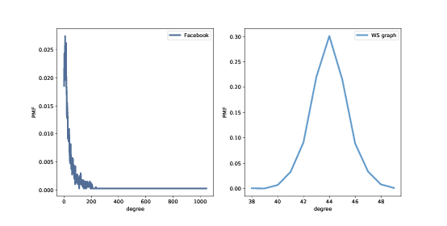
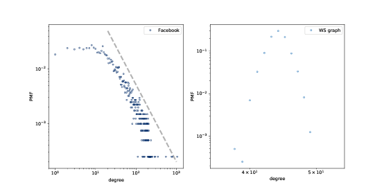
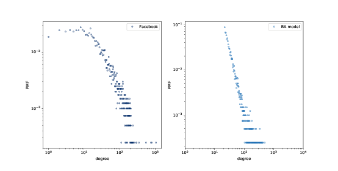
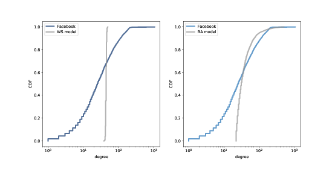
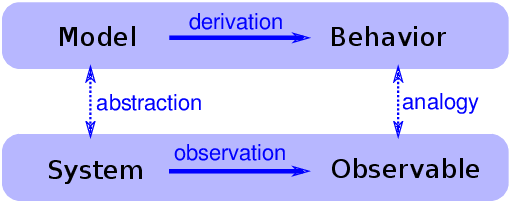

四、无标度网络
原文：Chapter 4 Scale-free networks
译者：飞龙
自豪地采用谷歌翻译
在本章中，我们将处理来自在线社交网络的数据，并使用 WS 图对其进行建模。WS 模型像数据一样，具有小世界网络的特点，但是与数据不同，它的节点到节点的邻居数目变化很小。
这种差异是 Barabási 和 Albert 开发的网络模型的动机。BA 模型捕捉到邻居数量的观察到的变化，它具有小的世界属性之一，短路径长度，但它没有一个小世界网络的高聚类。
本章最后讨论了 WS 和 BA 图，作为小世界网络的解释模型。
本章的代码位于本书的仓库中的chap04.ipynb中。使用代码的更多信息，请参见第（？）章。
4.1 社交网络数据
WS 图的目的是，模拟自然科学和社会科学中的网络。Watts 和 Strogatz 在他们最初的论文中，查看了电影演员的网络（如果他们出现在同一部电影中，就是连接的）。美国西部的电网；和 C. elegans 线虫脑中的神经元网络 。他们发现，所有这些网络都具有小世界图的高群聚性和短路径长度特征。
在本节中，我们将使用不同的数据集，Facebook 用户及其朋友的数据集，来进行相同的分析。如果你对 Facebook 不熟悉，那么彼此连接的用户被称为“朋友”，而不管他们在现实世界中的关系的性质如何。
我将使用来自斯坦福网络分析项目（SNAP）的数据，该项目分享了来自在线社交网络和其他来源的大型数据集。具体来说，我将使用他们的 Facebook 数据集 [1]，其中包括 4039 个用户和 88,234 个朋友关系。该数据集位于本书的仓库中，但也可以从 SNAP 网站上获取。
[1] J. McAuley and J. Leskovec. Learning to Discover Social Circles in Ego Networks. NIPS, 2012.
数据文件为每条边包含一行，用户由 0 到 4038 之间的整数标识。下面是读取文件的代码：
def read_graph(filename):
G = nx.Graph()
array = np.loadtxt(filename, dtype=int)
G.add_edges_from(array)
return G
NumPy 提供了函数loadtext，它读取给定的文件，并以 NumPy 数组的形式返回内容。参数dtype指定数组元素的类型。
然后我们可以使用add_edges_from迭代数组的行，并创建边。结果如下：
>>> fb = read_graph('facebook_combined.txt.gz')
>>> n = len(fb)
>>> m = len(fb.edges())
>>> n, m
(4039, 88234)
节点和边的数量与数据集的文档一致。
现在我们可以检查这个数据集是否具有小世界图的特征：高群聚性和短路径长度。
第（？）节中，我们编写了一个函数，来计算网络平均群聚系数。NetworkX 提供了一个叫做的函数average_clustering，它可以更快地完成相同的工作。
但是对于更大的图，它们都太慢，需要与nk^2成正比的时间，其中n是节点数，k是每个节点的邻居数。
幸运的是，NetworkX提供了一个通过随机抽样来估计群聚系数的函数。你可以像这样调用它：
from networkx.algorithms.approximation import average_clustering
average_clustering(G, trials=1000)
下面函数对路径长度做了类似的事情：
def random_path_lengths(G, nodes=None, trials=1000):
if nodes is None:
nodes = G.nodes()
else:
nodes = list(nodes)
pairs = np.random.choice(nodes, (trials, 2))
lengths = [nx.shortest_path_length(G, *pair)
for pair in pairs]
return lengths
G是一个图，nodes是节点列表，我们应该从中抽样，trials是要抽样的随机路径的数量。如果nodes是None，我们从整个图表中进行抽样。
pairs是随机选择的节点的 NumPy 数组，对于每个采样有一行两列。
列表推导式枚举数组中的行，并计算每对节点之间的最短距离。结果是路径长度的列表。
estimate_path_length生成一个随机路径长度列表，并返回它们的平均值：
def estimate_path_length(G, nodes=None, trials=1000):
return np.mean(random_path_lengths(G, nodes, trials))
我会使用average_clustering来计算C：
C = average_clustering(fb)
并使用estimate_path_lengths来计算L：
L = estimate_path_lengths(fb)
群聚系数约为0.61，这是较高的，正如我们所期望的那样，如果这个网络具有小世界特性。
平均路径为3.7，在 4000 多个用户的网络中相当短。毕竟这是一个小世界。
现在让我们看看是否可以构建一个 WS 图，与此网络具有相同特征。
4.2 WS 模型
在 Facebook 数据集中，每个节点的平均边数约为 22。由于每条边都连接到两个节点，度的均值是每个节点边数的两倍：
>>> k = int(round(2*m/n))
>>> k
44
我们可以用n=4039和k=44创建一个 WS 图。p=0时，我们会得到一个环格。
lattice = nx.watts_strogatz_graph(n, k, 0)
在这个图中，群聚较高：C是 0.73，而在数据集中是 0.61。但是L为 46，远远高于数据集！
使用p=1我们得到一个随机图：
random_graph = nx.watts_strogatz_graph(n, k, 1)
在随机图中，L是 2.6，甚至比数据集（3.7）短，但C只有 0.011，所以这是不好的。
通过反复试验，我们发现，当p=0.05时，我们得到一个高群聚和短路径长度的 WS 图：
ws = nx.watts_strogatz_graph(n, k, 0.05, seed=15)
在这个图中C是0.63，比数据集高一点，L是 3.2，比数据集低一点。所以这个图很好地模拟了数据集的小世界特征。
到现在为止还不错。
4.3 度

图 4.1：Facebook 数据集和 WS 模型中的度的 PMF。
回想一下，节点的度是它连接到的邻居的数量。如果 WS 图是 Facebook 网络的一个很好的模型，它应该具有相同的总（或平均）度，理想情况下不同节点的度数相同。
这个函数返回图中的度的列表，每个节点对应一项：
def degrees(G):
return [G.degree(u) for u in G]
数据集中的度的均值是 43.7；WS 模型中的度的均值是 44。到目前为止还不错。
但是，WS 模型中的度的标准差为 1.5；数据中的标准差是 52.4。有点糟。
这里发生了什么？为了更好地查看，我们必须看看度的 分布，而不仅仅是均值和标准差。
我将用一个 Pmf 对象来表示度的分布，它在thinkstats2模块中定义。Pmf 代表“概率质量函数”；如果你不熟悉这个概念，你可以阅读 Think Stats 第二版的第三章，网址是 http://greenteapress.com/thinkstats2/html/thinkstats2004.html。
简而言之，Pmf 是值到概率的映射。Pmf 是每个可能的度d，到度为d的节点比例的映射。
作为一个例子，我将构建一个图，拥有节点1, 2, 3，连接到中心节点0：
G = nx.Graph()
G.add_edge(1, 0)
G.add_edge(2, 0)
G.add_edge(3, 0)
nx.draw(G)
这里是图中的度的列表：
>>> degrees(G)
[3, 1, 1, 1]
节点0度为 3，其它度为 1。现在我可以生成一个 Pmf，它表示这个度的分布：
>>> from thinkstats2 import Pmf
>>> Pmf(degrees(G))
Pmf({1: 0.75, 3: 0.25})
产生的Pmf是一个对象，将每个度映射到一个比例或概率。在这个例子中，75％的节点度为 1，25％度为 3。
现在我们生成一个Pmf，包含来自数据集的节点的度，并计算均值和标准差：
>>> pmf_ws = Pmf(degrees(ws))
>>> pmf_ws.mean(), pmf_ws.std()
(44.000, 1.465)
我们可以使用thinkplot模块来绘制结果：
thinkplot.Pdf(pmf_fb, label='Facebook')
thinkplot.Pdf(pmf_ws, label='WS graph')
图（？）显示了这两个分布。他们是非常不同的。
在 WS 模型中，大多数用户有大约 44 个朋友；最小值是 38，最大值是 50。这个变化不大。在数据集中，有很多用户只有 1 或 2 个朋友，但有一个人有 1000 多个！
像这样的分布，有许多小的值和一些非常大的值，被称为重尾。
4.4 重尾分布

图 4.2：Facebook 数据集和 WS 模型中的度的 PMF，在双对数刻度下。
在复杂性科学的许多领域中，重尾分布是一个常见特征，它们将成为本书的一个反复出现的主题。
我们可以在双对数轴绘制它，来获得重尾分布的更清晰的图像，就像上面那副图那样。这种转换突显了分布的尾巴；也就是较大值的概率。
在这种转换下，数据大致在一条直线上，这表明分布的最大值与概率之间存在“幂律”关系。在数学上，
PMF(k) ~ k^(−α)
其中PMF(k)是度为k的节点的比例，α是一个参数，符号~表示当k增加时，PMF 渐近于k^(−α)。
如果我们把对两边取对数，我们得到：
logPMF(k) ~ −α logk
因此，如果一个分布遵循幂律，并且我们在双对数刻度上绘制PMF(k)与k的关系，那么我们预计至少对于k的较大值，将有一条斜率为-α的直线。
所有的幂律分布都是重尾的，但是还有其他重尾分布不符合幂律。我们将很快看到更多的例子。
但首先，我们有一个问题：WS 模型拥有高群聚性和短路径长度，我们在数据中也看到了，但度的分布根本不像数据。这种差异就启发了我们下一个主题，Barabási-Albert 模型。
4.5 Barabási-Albert 模型
1999 年，Barabási 和 Albert 发表了一篇论文“随机网络中的标度的出现”（Emergence of Scaling in Random Networks），描述了几个现实世界的网络的结构特征，包含一些图，它们展示了电影演员，万维网（WWW）页面和美国西部电网设施的互联性。你可以从 http://www.sciencemag.org/content/286/5439/509 下载该论文。
他们测量每个节点的度并计算PMF(k)，即节点度为k的比例。然后他们在双对数标度上绘制PMF(k)与k的关系。这些曲线可用一条直线拟合，至少对于k的较大数值；所以他们得出结论，这些分布是重尾的。
他们还提出了一个模型，生成了属性相同的图。模型的基本特征与 WS 模型不同，它们是：
增长：
BA 模型不是从固定数量的顶点开始，而是从一个较小图开始，每次添加一个顶点。
优先连接：
当创建一个新的边时，它更可能连接到一个已经有很多边的节点。这种“富者更富”的效应是一些现实世界网络增长模式的特征。
最后，他们表明，由 Barabási-Albert（BA）模型模型生成的图，度的分布遵循幂律。
具有这个属性的图有时被称为无标度网络，原因我不会解释；如果你好奇，可以在 http://en.wikipedia.org/wiki/Scale-free_network 上阅读更多内容。
NetworkX 提供了一个生成 BA 图的函数。我们将首先使用它；然后我会告诉你它的工作原理。
ba = nx.barabasi_albert_graph(n=4039, k=22)
参数是n要生成的节点数量，k是每个节点添加到图形时的起始边数。我选择k=22，是因为这是数据集中每个节点的平均边数。

图 4.3：Facebook 数据集和 BA 模型中的节点的 PMF，在双对数刻度上。
所得图形拥有 4039 个节点，每个节点有 21.9 个边。由于每条边连接两个节点，度的均值为 43.8，非常接近数据集中的度的均值 43.7。
度的标准差为 40.9，略低于数据集 52.4，但比我们从 WS 图得到的数值好 1.5 倍。
图（？）以双对数刻度展示了 Facebook 网络和 BA 模型的度的分布。模型并不完美；特别k是在小于 10 时偏离了数据。但尾巴看起来像是一条直线，这表明这个过程产生了遵循幂律的度的分布。
所以在重现度的分布时，BA 模型比 WS 模型更好。但它有小世界的属性？
在这个例子中，平均路径长度L是 2.5，这比实际的网络的L = 3.69更小。所以这很好，虽然可能太好了。
另一方面，群聚系数C为 0.037，并不接近数据集中的值 0.61。所以这是一个问题。
下表总结了这些结果。WS 模型捕获了小世界的特点，但没有度的分布。BA 模型捕获了度的分布，和平均路径长度，至少是近似的，但没有群聚系数。
在本章最后的练习中，你可以探索其他可以捕获所有这些特征的模型。
| WS 模型 | BA 模型 | ||
|---|---|---|---|
C |
0.61 | 0.63 | 0.037 |
L |
3.69 | 3.23 | 2.51 |
| 度的均值 | 43.7 | 44 | 43.7 |
| 度的标准差 | 52.4 | 1.5 | 40.1 |
| 幂律？ | 可能 | 不是 | 是 |
表 4.1：与两个模型相比，Facebook 网络的特征。
4.6 生成 BA 图
在前面的章节中，我们使用了 NetworkX 函数来生成BA图。现在让我们看看它的工作原理。这是一个barabasi_albert_graph的版本，我做了一些更改，使其更易于阅读：
def barabasi_albert_graph(n, k):
G = nx.empty_graph(k)
targets = list(range(k))
repeated_nodes = []
for source in range(k, n):
G.add_edges_from(zip([source]*k, targets))
repeated_nodes.extend(targets)
repeated_nodes.extend([source] * k)
targets = _random_subset(repeated_nodes, k)
return G
n是我们想要的节点的数量，k是每个新节点边的数量（近似为每个节点的边的数量）。
我们从一个k个节点和没有边的图开始。然后我们初始化两个变量：
targets：
k个节点的列表，它们将被连接到下一个节点。最初targets包含原来的k个节点；之后它将包含节点的随机子集。
repeated_nodes：
一个现有节点的列表，如果一个节点有k条边，那么它出现k次。当我们从repeated_nodes选择时，选择任何节点的概率与它所具有的边数成正比。
每次循环中，我们添加源节点到targets中的节点的边。然后我们更新repeated_nodes，通过添加每个目标一次，以及新的节点k次。
最后，我们选择节点的子集作为下一次迭代的目标。以下是_random_subset的定义：
def _random_subset(repeated_nodes, k):
targets = set()
while len(targets) < k:
x = random.choice(repeated_nodes)
targets.add(x)
return targets
每次循环中，_random_subset从repeated_nodes选择，并将所选节点添加到targets。因为targets是一个集合，它会自动丢弃重复项，所以只有当我们选择了k不同的节点时，循环才会退出。
4.7 累积分布函数（CDF）

图 4.4：Facebook 数据集中的度的 CDF，以及 WS 模型（左边）和 BA 模型（右边），在双对数刻度上。
图 4.3 通过在双对数刻度上绘制概率质量函数（PMF）来表示度的分布。这就是 Barabási 和 Albert 呈现他们的结果的方式，这是幂律分布的文章中最常使用的表示。但是，这不是观察这样的数据的最好方法。
更好的选择是累积分布函数 （CDF），它将x值映射为小于或等于x的值的比例。
给定一个 Pmf，计算累积概率的最简单方法是将x的概率加起来，包括x：
def cumulative_prob(pmf, x):
ps = [pmf[value] for value in pmf if value<=x]
return sum(ps)
例如，给定数据集中的度的分布，pmf_pf，我们可以计算好友数小于等于 25 的比例：
>>> cumulative_prob(pmf_fb, 25)
0.506
结果接近 0.5，这意味着好友数的中位数约为 25。
因为 CDF 的噪音比 PMF 少，所以 CDF 更适合可视化。一旦你习惯了 CDF 的解释，它们可以提供比 PMF 更清晰的分布图像。
thinkstats模块提供了一个称为Cdf的类，代表累积分布函数。我们可以用它来计算数据集中的度的 CDF。
from thinkstats2 import Cdf
cdf_fb = Cdf(degrees(fb), label='Facebook')
thinkplot提供了一个函数，叫做Cdf，绘制累积分布函数。
thinkplot.Cdf(cdf_fb)
图 4.4 显示了 Facebook 数据集的度的 CDF ，以及 WS 模型（左边）和 BA 模型（右边）。x轴是对数刻度。
显然，WS 模型和数据集的 CDF 很大不同。BA 模式更好，但还不是很好，特别是对于较小数值。
在分布的尾部（值大于 100），BA 模型看起来与数据集匹配得很好，但是很难看出来。我们可以使用另一个数据视图，更清楚地观察数据：在对数坐标上绘制互补 CDF。
互补 CDF（CCDF）定义为：
CCDF(x) = 1 − CDF(x)
它很有用，因为如果 PMF 服从幂律，CCDF 也服从：
CCDF(x) =(x/x_m)^(-α)
其中x_m是最小可能值，α是确定分布形状的参数。
对两边取对数：
logCCDF(x) = −α (logx − logx_m)
因此，如果分布服从幂定律，在双对数刻度上，我们预计 CCDF 是斜率为-α的直线。
图 4.5 以双对数刻度显示 Facebook 数据的度的 CCDF，以及 WS 模型（左边）和 BA 模型（右边）。
通过这种查看数据的方式，我们可以看到 BA 模型与分布的尾部（值大于 20）匹配得相当好。WS 模型没有。
4.8 解释性模型

图 4.6：解释性模型的逻辑结构
我们以 Milgram 的小世界实验开始讨论网络，这表明社交网络中的路径长度是惊人的小；因此，有了“六度分离”。
当我们看到令人惊讶的事情时，自然会问“为什么”，但有时候我们不清楚我们正在寻找什么样的答案。一种答案是解释性模型（见图 4.6）。解释性模型的逻辑结构是：
在一个系统
S中，我们看到一些可观察的东西O，值得解释。我们构建一个与系统类似的模型
M，也就是说，模型与系统之间的元素/组件/原理是对应的。通过模拟或数学推导，我们表明，该模型展现出类似于
O的行为B。我们得出这样的结论：
S表现O，因为S类似于M，M表示B，而B类似于O。
其核心是类比论证，即如果两个事物在某些方面相似，那么它们在其他方面可能是相似的。
类比论证是有用的，解释模型可以令人满意，但是它们并不构成数学意义上的证明。
请记住，所有的模型都有所忽略，或者“抽象掉”我们认为不重要的细节。对于任何系统都有很多可能的模型，它们包括或忽略不同的特性。而且可能会出现不同的行为模式，B，B'和B''，这些模式与O不同。在这种情况下，哪个模型解释了O？
小世界现象就是一个例子：Watts-Strogatz（WS）模型和 Barabási-Albert（BA）模型都展现出小世界行为的元素，但是它们提供了不同的解释：
- WS 模型表明，社交网络是“小”的，因为它们包括强连通的集群，和连接群集的“弱关系”（参见 http://en.wikipedia.org/wiki/Mark_Granovetter#The_strength_of_weak_ties）。
- BA 模型表明，社交网络很小，因为它们包括度较高的节点，作为中心，并且随着时间的推移，由于优先添加，中心会增长。
在科学的新兴领域，往往是这样，问题不是我们没有解释，而是它们太多。
4.9：练习
练习 1：
上一节中，我们讨论了小世界现象的两种解释，“弱关系”和“中心”。这些解释是否兼容？也就是说，他们能都对吗？你觉得哪一个解释更令人满意？为什么？
是否有可以收集的数据或可以执行的实验，它们可以提供有利于一种模型的证据？
竞争模型中的选择，是托马斯·库恩（Thomas Kuhn）的论文“客观性，价值判断和理论选择”（Objectivity, Value Judgment, and Theory Choice）的主题，你可以在 https://github.com/AllenDowney/ThinkComplexity2/blob/master/papers/kuhn.pdf 上阅读。
对于竞争模型中的选择，库恩提出了什么标准？这些标准是否会影响你对 WS 和 BA 模型的看法？你认为还有其他标准应该考虑吗？
练习 2：
NetworkX 提供了一个叫做powerlaw_cluster_graph的函数，实现了 Holme 和 Kim 算法，用于使用度的幂律分布和近似平均聚类，使图增长。阅读该函数的文档，看看是否可以使用它来生成一个图，节点数、度的均值和群聚系数与 Facebook 数据集相同。与实际分布相比较，模型中的度的分布如何？
练习 3：
来自 Barabási 和 Albert 论文的数据文件可从 http://www3.nd.edu/~networks/resources.htm 获得。他们的演员协作数据包含在名为actor.dat.gz的文件中。以下函数读取文件并构建图。
import gzip
def read_actor_network(filename, n=None):
G = nx.Graph()
with gzip.open(filename) as f:
for i, line in enumerate(f):
nodes = [int(x) for x in line.split()]
G.add_edges_from(thinkcomplexity.all_pairs(nodes))
if n and i >= n:
break
return G
计算图中的演员数量和度的均值。以双对数刻度绘制度的 PMF。同时在对数-线性刻度上绘制度的 CDF，来观察分布的一般形状，并在双对数刻度上观察，尾部是否服从幂律。
注意：演员的网络不是连通的，因此你可能想要使用nx.connected_component_subgraphs查找节点的连通子集。